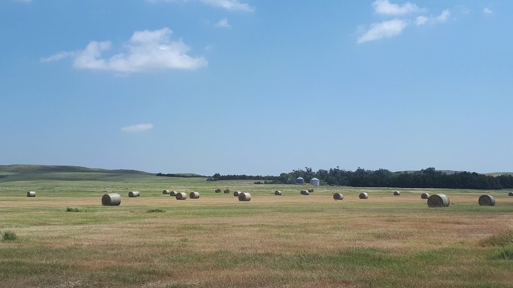

Yuguo Yang, Gregory J. Pec, Sabrina E. Russo. (In prep) Plant-mycorrhizal-bacterial networks reflect biodiversity and productivity in a North American grassland ecosystem.
Yuguo Yang, Glenn Ledder, Sabrina E. Russo. (In prep) Costs and benefits of mycorrhizal symbiosis in a plant resource allocation framework.
Yuguo Yang, Sabrina E. Russo. (Accepted) Trade-offs in rooting strategy dimensions along an edaphic gradient in a grassland ecosystem. Functional Ecology.
Amanda Quattrone, Yuguo Yang, Pooja Yadav, Karrie A Weber, Sabrina E Russo. (2023) Soil domestication: Nutrient and microbiome-mediated plant-soil feedbacks in agroecosystems. Microorganisms. 11(12), 2978. https://doi.org/10.3390/microorganisms11122978.
Pooja Yadav, Amanda Quattrone, Yuguo Yang, Jacob Owens, Rebecca Kiat, Thirumurugen Kuppusamy, Sabrina E Russo, Karrie A Weber. (2023) Zea mays genotype influences microbial and viral rhizobiome community structure. ISME Communications. https://doi.org/10.1038/s43705-023-00335-4.
Qiuyun Fan, Yuguo Yang, Yuqing Geng, Youlin Wu, Zhanen Liu. (2022) Biochemical composition and
function of subalpine shrubland and meadow soil microbiomes in the Qilian Mountains, Qinghai–Tibetan
plateau, China. PeerJ 10:e13188. https://doi.org/10.7717/peerj.13188.
Lin Yu, Guobing Lan, Yuguo Yang, Yafei Tang, Zhenggang Li, Xiaoman She, Zifu He. (2021) First report of anthracnose caused by Colletotrichum fructicola on Brassica parachinensis in China. Crop Protection 154:105842 https://doi.org/10.1016/j.cropro.2021.105842.
Yuguo Yang1, Ying Yang1, Yuqing Geng, Guilin Huang, Xueqing Cui, Meng Hou. (2018) Effects of different land types on soil enzyme activity in the Qinghai Lake region. Wetlands 38:711–721. https://doi.org/10.1007/s13157-018-1014-9.
Yuguo Yang, Yuqing Geng, Hongjuan Zhou, Guangliang Zhao, Ling Wang. (2017) Effects of gaps in the forest canopy on soil microbial communities and enzyme activity in a Chinese pine forest. Pedobiologia 61:51–60. https://doi.org/10.1016/j.pedobi.2017.03.001.
